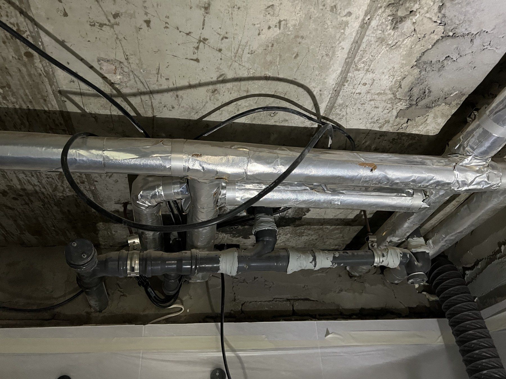

종합 누수 탐지
계량기·수압 검사부터 배관 경로까지 확인해 누수 범위를 단계적으로 좁힙니다.
- 아파트·빌라·주택
- 상가·사무실
원인을 확인하기 전에 바로 뜯지 않습니다. 전문 장비로 누수 지점을 정밀 진단하고,
꼭 필요한 범위만 투명하게 안내해 드립니다.
원인을 단정하지 않고, 현장에서 무엇부터 확인해야 하는지 안내합니다.
급한 물 번짐은 먼저 밸브를 잠그고 관리사무소·아랫집에 알려 주세요.
확인한 항목을 누르면 상담 준비 메모가 만들어집니다. 체크 내용은 이 기기에 저장되거나 자동 전송되지 않습니다.
한 가지 장비에만 의존하지 않고 현장 구조와 누수 증상에 따라
가장 적합한 탐지 방식을 조합합니다.
계량기·수압 검사부터 배관 경로까지 확인해 누수 범위를 단계적으로 좁힙니다.
표면 온도 차이를 분석해 온수관과 바닥 난방 배관의 이상 지점을 확인합니다.
미세한 누수음과 추적 가스 반응을 함께 살펴 매립 배관의 위치를 정밀 탐색합니다.
탐지 결과를 먼저 설명한 뒤 오수·생활하수(배수) 구간을 수리하고 방수·타일·도배 복원까지 이어서 진행합니다.
※ 난방배관·상수도 급수설비는 법령상 등록 업체 시공이 필요한 공종입니다. 탐지 결과가 그쪽이면 진행 경로를 안내해 드립니다.
대전·세종·논산·청주를 중심으로 충남·충북 인접 지역까지 출장 가능합니다. 정확한 출동 가능 여부와 예상 도착 시간은 전화 상담 후 안내해 드립니다.
누수 위치와 건물 형태를 확인하고 예상 절차를 안내합니다.
수압·계량기·배관 경로를 살펴 누수 가능 범위를 좁히고, 요금을 착수 전에 확정합니다.
열화상·청음·가스 장비를 활용해 원인 지점을 확인합니다. 못 찾으면 탐지비를 받지 않습니다.
사진과 함께 원인·위치와 전용부/공용부 구분 소견을 드리고, 수리·보험 서류를 안내합니다.
“보험으로 처리해 드립니다”라고 확정하지 않습니다.
지급 여부는 약관과 보험사 심사가 정합니다 — 저희는 심사에 필요한 사실 자료를 정리해 드립니다.
전문 장비로 누수 원인과 위치를 확인하고 추가 피해를 줄이기 위한 조치를 안내합니다.
탐지 전·중·후 사진, 누수 원인 보고서, 탐지비 및 원인부 수리 견적을 준비합니다.
전용부/공용부 구분을 확인하고 가입한 보험사에 사고를 접수한 뒤 요청 서류를 제출합니다.
보험사의 현장 확인과 심사 결과에 따라 원인부 수리 및 피해 세대 복구를 진행합니다.
※ 실제 보상 범위와 지급 여부는 사고 원인, 가입 보험의 약관 및 보험사 심사 결과에 따라 달라질 수 있습니다. 누수 보험, 되는 경우·안 되는 경우 자세히 보기 · 관리사무소 담당자 안내
AI 이미지나 지어낸 후기가 아니라 실제 공정 사진만 사용합니다.
고객 이름·연락처·동·호수는 공개하지 않습니다.

지하실을 지나는 노후 공용배관 구간을 새 배관으로 교체하고, 같은 라인에서 잠기지 않던 세대 계량기 밸브를 함께 교체한 기록입니다.
현장 기록 보기

천장 부속에서 물이 샌다는 연락을 받고 천장을 열어 확인한 뒤, 오수관과 생활하수 배관을 교체했습니다. 통수시험까지 2시간.
전후 현장 기록 보기
대전 한밭유성아파트 세대 생활하수관 노후 구간 교체 기록입니다. 무엇을 갈았고, 마무리를 어떻게 확인했는지 실제 시공 사진과 함께 정리했습니다.…
현장 기록 보기
마감 타일 뒤에 숨는 공정도 사진으로 남깁니다. 방수는 겉모습만으로 판단하지 않고 바탕 상태·배수구 주변·벽체 연결부를 함께 확인합니다.
욕실 방수 점검 기준 보기건물 형태와 누수 범위, 실제로 쓰는 장비 구성(아랫집 동반 확인·가스추적·배관 내시경·부분 해체 등)에 따라 달라집니다. 전화로 증상을 먼저 여쭤본 뒤, 현장에서 확인하고 착수 전에 금액을 확정해 드립니다. 확정 전에는 작업을 시작하지 않습니다. 그리고 약속 하나 — 누수 위치를 특정하지 못하면 탐지비를 받지 않습니다.
"보험으로 처리해 드립니다"라고 확정하지 않습니다. 보상 여부는 가입하신 보험의 약관과 사고 내용에 따라 달라지기 때문입니다. 대신 저희는 보험사 심사에 필요한 사실 자료 — 누수탐지 보고서(원인·위치·전용부/공용부), 탐지 전후 사진, 피해·수리 견적 — 를 제출 가능한 형태로 정리해 드립니다. 일상생활배상책임보험은 자동차·화재·실손보험에 특약으로 숨어 있는 경우가 많으니 '내보험찾아줌'에서 가입 여부를 먼저 확인해 보세요. 누수 사고는 자기부담금이 있는 상품이 많다는 점도 함께 확인하시길 권합니다.
국가 건설 기준(건설산업기본법 하자담보책임기간)에 따라 공종별로 보증합니다. 방수는 3년, 급배수 등 설비는 2년, 도배·도장·타일·창호·목공 등 마감은 1년입니다. 준공 시 보증서가 자동 발급되어 고객 전용 링크에 준공 후에도 계속 확인하실 수 있게 보관되며, 하자 발생 시 그 링크에서 바로 A/S를 접수할 수 있습니다.
인테리어 상담과 1차 방문 실측은 무료입니다. 누수탐지는 장비 탐지에 착수하는 시점부터 유료(부가세 별도)이며, 금액은 착수 전에 확정해 드리고 위치를 특정하지 못하면 탐지비를 받지 않습니다. 홈페이지 상담 신청을 남기시거나 전화·문자(010-2397-8629)로 연락 주시면 일정을 잡아드립니다. 영업시간은 평일 09:00–17:30이며, 그 외 시간에는 신청을 남겨 주시면 회신드립니다.
연락처와 증상만 있으면 접수됩니다. 평수·예산은 묻지 않습니다.
평일 09:00–17:30에 확인하며, 그 외 시간에 남기신 내용도 다음 영업일에 회신드립니다.